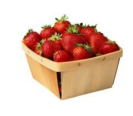
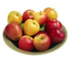

Рисунки в HTML-документах

Живой кефирный тибетский гриб
 Полученный с его помощью кефир является уникальным лечебным препаратом, помогающим бороться с аллергией, гипертонией, язвенной болезнью желудка и двенадцатиперстной кишки. Его употребление нормализует кишечную микрофлору. Кефир, получаемый в результате жизнедеятельности гриба, оказывает общее оздоровительное действие и стимулирует иммунитет.
Кефирный гриб для похудения
Настой тибетского молочного гриба снижает вес при ожирении. Весь его секрет в том, что он преобразует жиры в более простые соединения, которые затем сам же и выводит из организма человека. Для того чтобы похудеть, следует пить настой тибетского молочного гриба ежедневно через полчаса после еды и один - два раза в неделю устраивать разгрузочные дни. Примечание: фон документа – розовый.
В лесу родилась елочка,
В лесу она росла.
Зимой и летом стройная,
Зеленая была.
Метель ей пела песенку:
- Спи, елочка, бай-бай.
Мороз снежком укутывал:
- Смотри, не замерзай.
Летающий ангел
Используйте возможности HTML-языка можно летать ангела по странице.
И не только ангела...